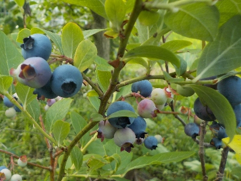
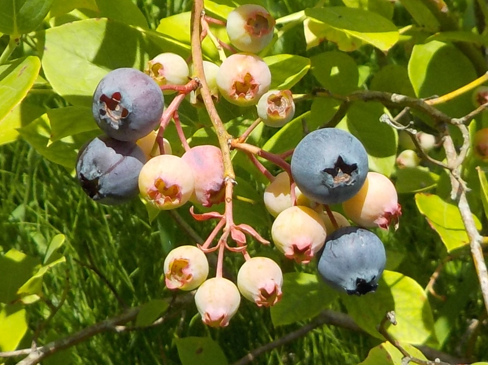
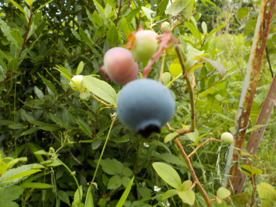
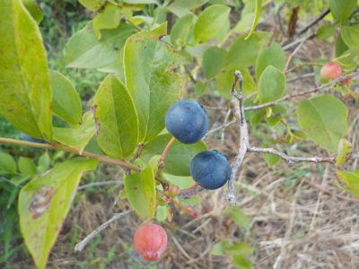
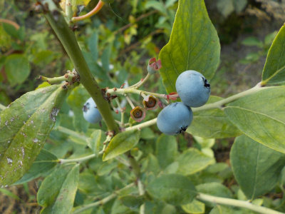
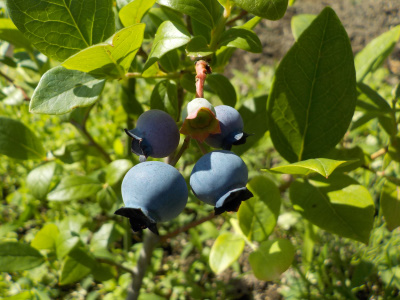
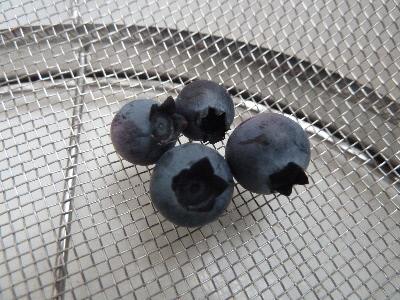

更新日 : 2025/06/18

家にブルーベリーは何本もあるんですが、これだけ実が出来るのが早いです。
これ1本だけ種類が違うなんてことはないはずなんだけどな。
環境によって成長が大きく変わるのかな？他のブルーベリーと時期がずれるのはうれしいので、実を収穫し終わったら挿し木しようと思っています。
更新日 : 2024/07/06

私は見ていないですが、ブルーベリーが熟れると鳥が食べに来ているそうです。
ネットを張ろうかとも思いましたが、鳥よけのネットは目が細かくて面倒な気がしてやめました。
熟れたものからドンドン収穫して食べます。
更新日 : 2023/06/10

ブルーベリーが熟れだしました。この木はまだ小さいので、今日の収獲は5個だけです。
食べごろで収獲しているのでとっても美味しい。
更新日 : 2022/08/07

熟れすぎちゃって黒いブルーベリーは酸っぱいです。

これくらいの色は甘くて美味しいです。
今日は20粒くらい収獲しました。少ないですね。
更新日 : 2022/06/19
2粒だけいい色になったので食べました。
美味しかったです。でも2粒だと物足りないです。
更新日 : 2019/06/09

実が出来るのが早い品種は食べれるようになりました。
数が少ないのでその場て食べました。甘くて美味しかったです。
更新日 : 2017/06/10

ブルーベリーの木にイモムシが住んでいて、たいぶかじられていました。
気を付けて見ないといけませんね。
美味しいのに当たれ！って思いながら食べています。
【おいしいものを食べよう。】【たくさん寝よう。】
【ソロ活をしよう!】【季節感のあることをしよう。】【動画視聴はほどほどに。】【当サイトの全てのコンテンツは無断転載禁止です。】